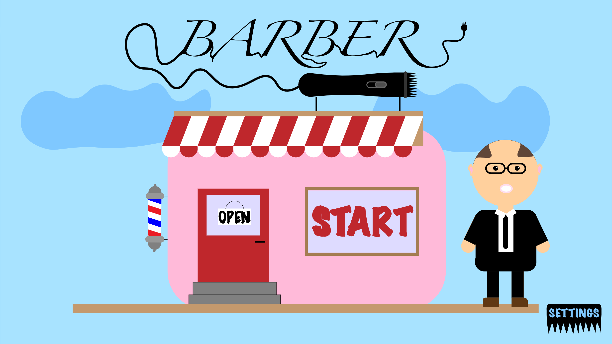
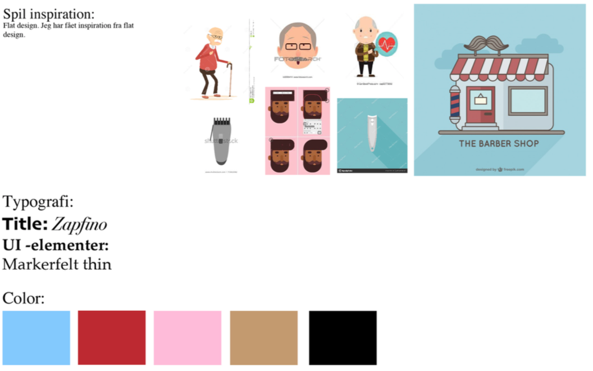
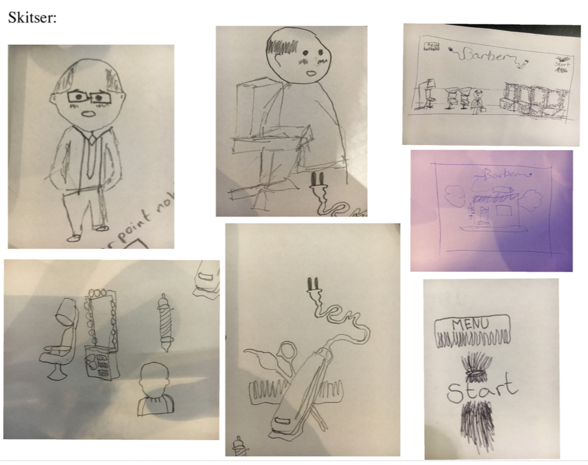
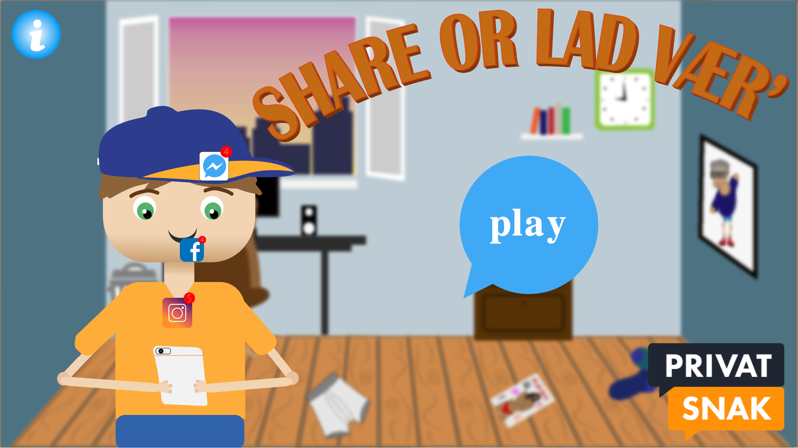
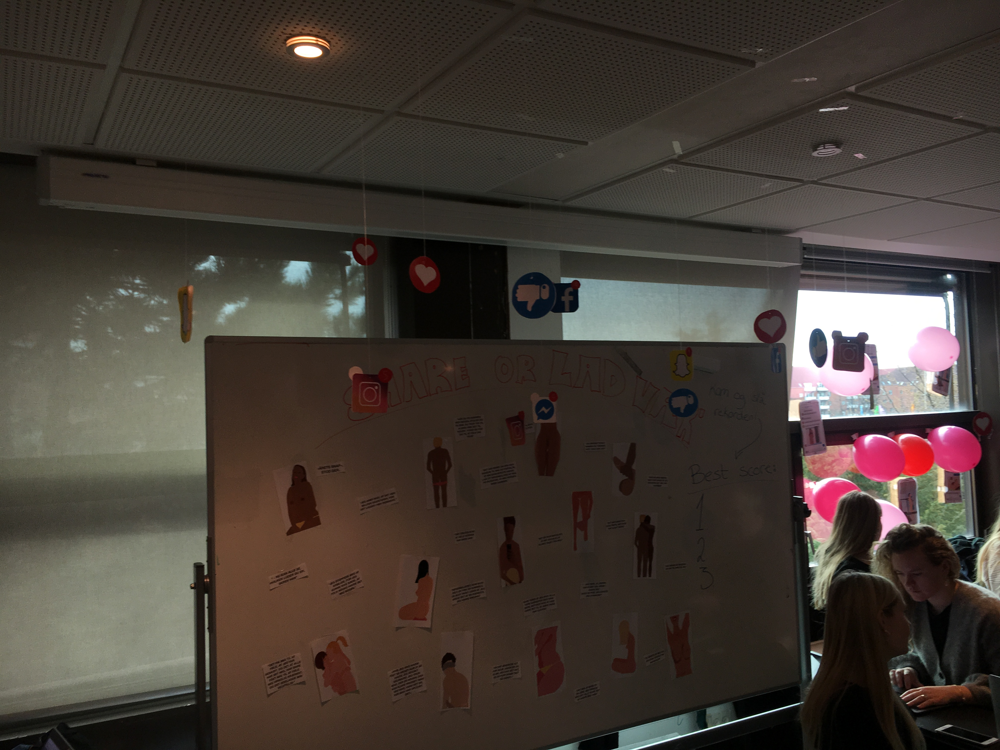
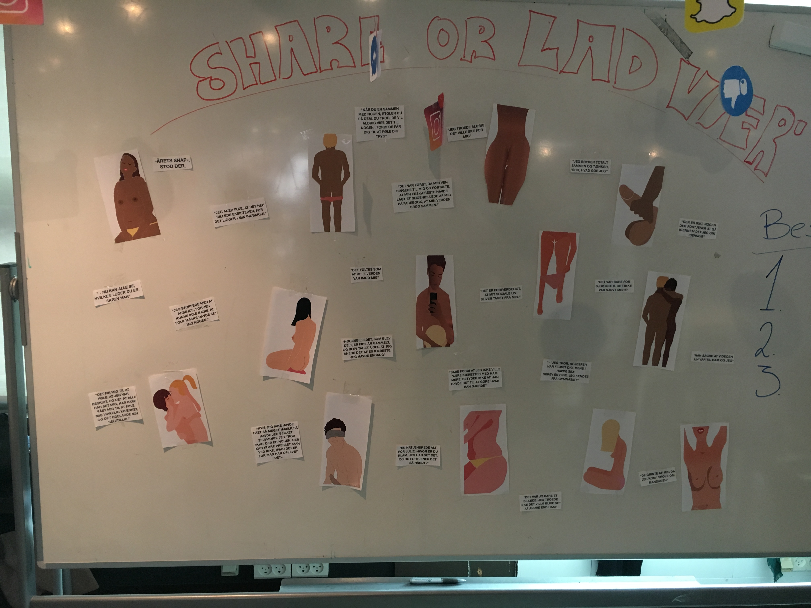

I vores animations forløb lærte vi om animations design, interaktiv storytelling og javascript-programmering. Først lavede vi vores eget spil og derefter lavede vi et spil i en gruppe. Igennem læren om designprocesser, aktiviteter diagrammer og state machine diagrammer fik vi kendskab til digital medieproduktion. Vi udførte brugertest og brugerforståelse af vores digitale medieproduktion. I vores gruppearbejde blev vi introduceret for SCRUM. Her opnåede vi viden om at anvende grundlæggende redskaber til styring af en multimedieproduktion.
Værktøjer anvendt:Illustrator, Photoshop, SVG-fil format, HTML, Javascript, CSS.



BARBER
I vores individuelle forløb omkring animation valgte jeg at designe og programmere et spil om Mogens. Mogens er træt af at han har mistet alt sit hår og vil nu han gøre noget ved det. Han tager til the Barber shop. I spillet “Barbar” skal man fange håret der falder ned så Mogens kan få det på hovedet. Fanger man en barber maskine i stedet så mister han håret igen.Jeg startede med at lave forskellige skitser for hvordan jeg gerne ville have Mogens så ud, og hvordan de forskellige omgivelser skulle se ud. Derefter udarbejdede jeg et endeligt moodboard for hvordan jeg ønskede fonte, farver og stil skulle være. Efter alt var designet og kodet, skulle vi implimitere lyde i spillet. På grund af tidspres er der nogle fejl i lyden.
Link til spil
Sex & Samfund



FERNISERING
SHARE OR LAD VÆR'
I vores gruppe-projekt animation skulle vi udvikle et spil omkring deling af nøgenbilleder for Sex og Samfund. Igennem brainstorm og research af inspiration kom vi frem til vores spil idé. ideen er at man skal tage stilling til om hvorvidt man må dele de billeder man får tilsendt. Hovedpersonen får tilsendt en masse forskellige billeder. På spilskærmen ser man telefonen, samt to tænkebobler - en med ikoner for diverse sociale medier (deles) og en hvor der er en skraldespand (slettes). Han skal nu tage stilling til om han må dele billederne eller om de skal slettes/smides ud. De billeder han modtager er blandt andet nøgenbilleder, men også almindelige billeder.
Spillet følger designstilen kawaii og nøgenbillederne er inspireret af Jérôme Masi’s stil. Trods at de to stile er forskellige, var det et bevidst valg. Vi ønskede at nøgenbilleder var mere detaljeret og skillede sig ud fra resten, så at de næsten virkede rigtige. Vi ville gerne stille målgruppen (unge mellem 13-15år) i et dilemma, som om det var i virkeligheden.
I dette forløb lærte vi at anvende SCRUM, som gjorde det muligt for os at uddelegere arbejdsopgaver og have et overblik over vores process.